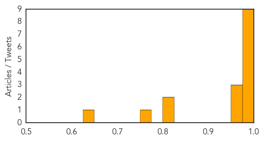

Influenza
30-Day Web Trend
7 alerts, 0 warnings

30-Day Twitter Trend
0 alerts, 0 warnings

Article Locations

Article Confidences
Top Articles:
- 0.999
- Flu Circulating in Iowa, Vaccination Is The Best Protection
- 0.998
- Influenza: By the numbers
- 0.998
- One Hoosier dead of flu early in season
- 0.994
- Sioux City hospitals, clinics take precautions to prevent influenza spread
- 0.987
- Statin use weakens flu vaccine potency
- 0.983
- Studies raise questions about impact of statins on flu vaccination in seniors
- 0.982
- Public health studies raise questions about impact of statins on flu vaccination in seniors
- 0.979
- BCCDC study shows 8-fold increase of Enterovirus D68 in 2014
- 0.975
- The Belleville Intelligencer
- 0.975
- Statins May Dampen Protective Powers of Flu Vaccines
- 0.972
- Studies indicate statins could dampen flu vaccine effect
- 0.966
- Pharmacy Association of Saskatchewan: Pharmacists Provide Convenient Access To Flu Shots
- 0.814
- CardioBrief: Flu Vaccine Weakened by Statin Use?
- 0.810
- Spread of unknown dog illness in Orangeville raises new flags across Ontario
- 0.774
- Common Prescription Med May Reduce Flu Vaccine Effectiveness
- 0.634
- Pharmacies now offering flu shots
Top Tweets:
-
No tweets found for Oct 30, 2015
West Nile Virus
30-Day Web Trend
0 alerts, 0 warnings

30-Day Twitter Trend
0 alerts, 0 warnings

Article Locations
Article Confidences

Top Articles:
Top Tweets:
- 0.618
- Flavivirus news: Mosquito pool in Frisco Lakes area tests positive for West Nile virus - Dallas... https://t.co/hTBH71p4iI pathogenposse